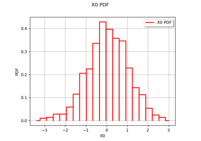
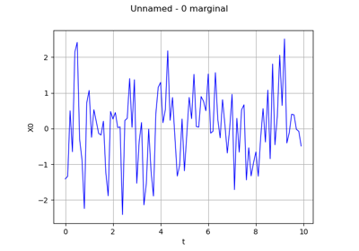

Stochastic_processes¶



Aggregate processes

Create a gaussian process from a cov. model using HMatrix
Create a gaussian process from a cov. model using HMatrix



Manipulate a time series


Create a process from random vectors and processes
Create a process from random vectors and processes

Sample trajectories from a Gaussian Process with correlated outputs
Sample trajectories from a Gaussian Process with correlated outputs